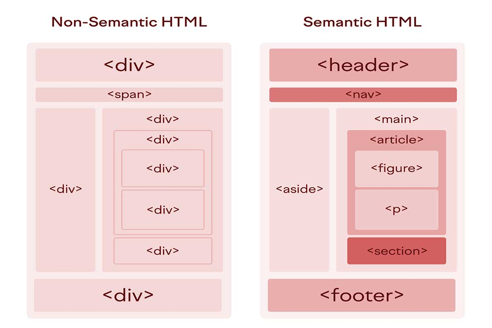

Semantic tag:
A semantic tag is a tag that provides meaning to the content it encloses, making it understandable to browsers, developers, and search engines. In web development, semantic tags like <header>, <nav>, <article>, and <footer> define the purpose of the content, unlike generic tags like <div> and <span> which lack inherent meaning. Using semantic tags improves accessibility and SEO by providing clear structure and context to web pages.
In web development:
Reading the notes under below and understand that the semantic tag.
- Purpose: To give meaning to content beyond just styling. For example, nav tag indicates a navigation menu, and article tag represents a self-contained piece of content like a blog post.
- Benefits:
- Accessibility: Screen readers and other assistive technologies can better interpret the page structure.
- SEO: Search engines can understand the content's importance and structure, which can lead to better search rankings.
- Readability: Makes the code easier for developers to read and maintain.
- Examples:
- <header> :Used to represent the top section of a web pages , often containing headings , logos and navigation.
- <nav> :Signifies a navigation menu on a web pages.
- <article> :Indicates a self-contained piece of content , such as a blog post or news article.
- <section> :Represents a thematic grouping of content on a web pages.
- <footer> :Represents the footer of a web pages, usually containing copyright information and contact details.
- <main> :Signifies the main content area of a web pages.
- <aside> :Typically used for sidebars or content that is tangentially related to the main content.
- <figure> and <figcaption> : Used for embedding images , diagrams , or charts along with a caption.
- <time> :Used to represents time-related information, like dates and times.
